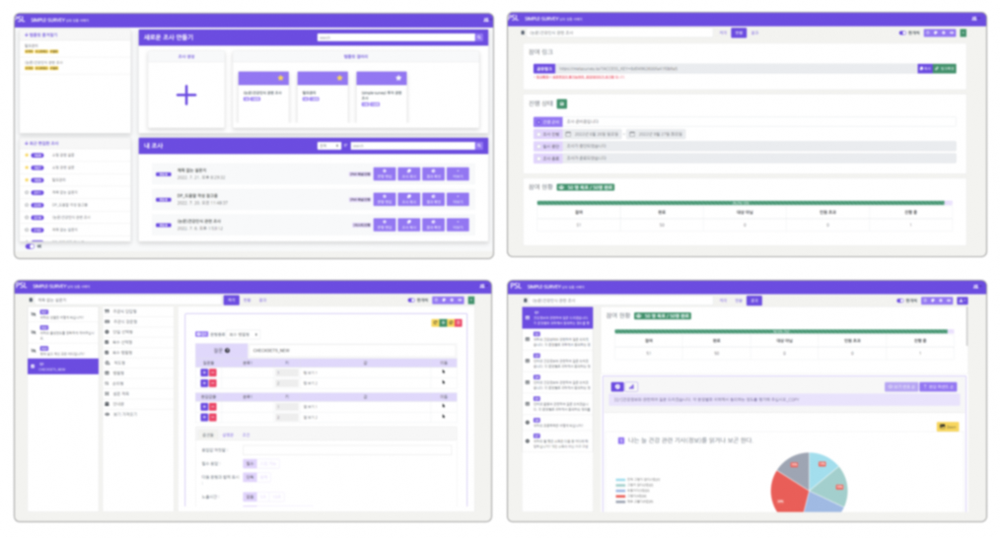
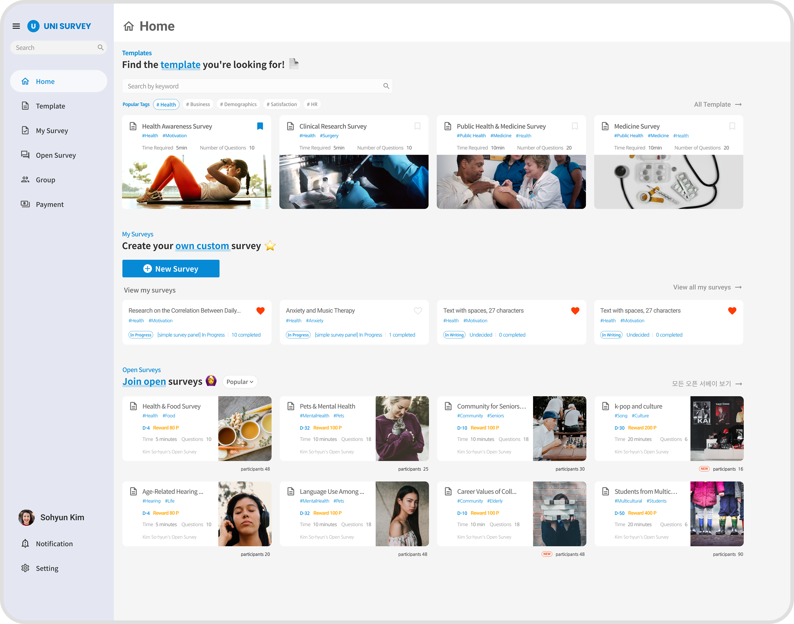
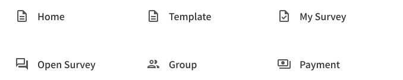
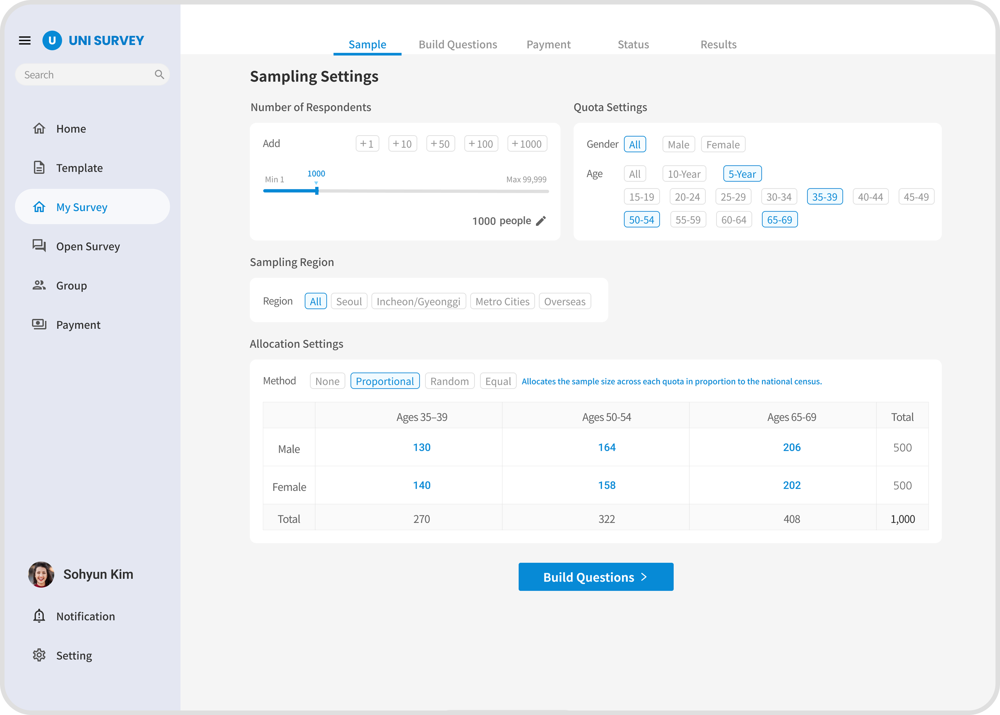
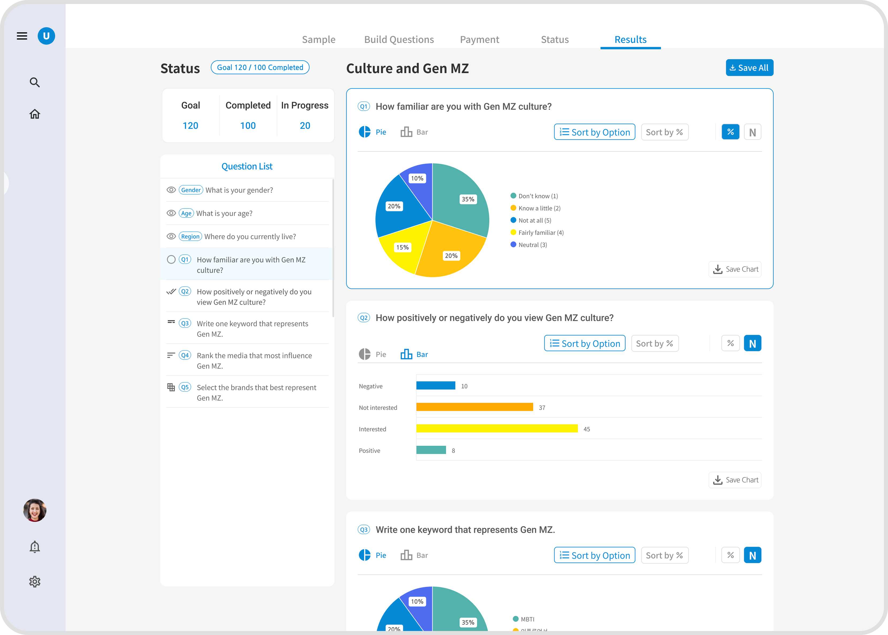

UNI SURVEY
UNI SURVEY is a one-stop web service built to optimize survey design and response collection effectively. Driven by the core values of intuition, intimacy, and scalability, it lowers user entry barriers with smart template layouts. The platform transforms collected responses into structured data, enabling users to derive critical insights quickly and effortlessly.
Summary
Worked closely with PM and engineers through weekly UX sessions to shape user-centered interaction patterns for the platform. Focused on transforming complex survey-building workflows into clear, high-fidelity designs guided directly by usability testing insights.
Interview
Conducted pre-launch design interviews using the available Bootstrap UI, then utilized the feedback to design and improve the UX beyond template limitations.
Previous UX

How would you rate the level of professionalism?
Medium
It shows that effort was made, and it looks more professional than Naver or Google Forms. However,
it feels cluttered and lacks accessibility.
What are your first impressions?
It looks clean, but visually cluttered information, unclear home categories, uniform colors, and a lack of headings make it confusing to navigate.
How would you rate the design quality?
C+ As the color consistency fails to reflect visual hierarchy according to importance, and it is unclear why the header and buttons share the same color.
What were your thoughts on the color palette?
The purple feels too strong for a business brand where blue might be more appropriate, creating a disconnect between the logo and the overall design.
RESEARCH SYNTHESIS / UNI SURVEY
PERSONAS + JOURNEY
Different users. Shared friction.
Three user perspectives revealed where the survey journey needed clearer guidance and faster access to results.
01 / USER NEEDS
Who are we designing for?
Graduate student
Starting & managing team surveys
- NEEDS
- Templates and shared team management
Unsure where to start or coordinate with teammates
Marketing specialist
Recruiting respondents & evaluating feedback
- NEEDS
- Faster panels and immediate data visuals
Recruitment and collection take too much time
Survey respondent
Finding surveys to complete
- NEEDS
- Discover active surveys in one place
Available survey opportunities are hard to find
02 / EXPERIENCE JOURNEY
Where does friction peak?
- Start
- Find platform
- Create questions
- Recruit & collect
- Visualize results
- Present
HIGHEST CONCERN
Recruiting respondents
DESIGN OPPORTUNITIES
- Easy starting pointSurvey templates
- Respondent accessFaster collection
- Clearer insightsImmediate visualization
Home
Problem
The home screen suffered from a severe lack of visual hierarchy and structural clarity, causing significant cognitive confusion among users regarding the main categories. New users faced a cold start with multiple "empty states" that failed to provide immediate onboarding value. Additionally, critical GUI flaws introduced functional friction: using identical star icons for distinct features created ambiguity, while the repetitive use of primary brand colors led to poor contrast, making it difficult to distinguish key buttons and call-to-actions.
Revised UX

Template-Centric Restructuring
Prioritized ready-to-use templates at the top to eliminate "empty states" for new users, reorganizing the main layout into three intuitive content pillars based on user intent.
Global Sidebar Navigation
Introduced a persistent sidebar menu on the left to display the platform's core architecture at a
glance, drastically improving feature discoverability and accessibility.

My Survey
Problem
The sampling setup page featured fragmented and disorganized condition buttons, which severely increased cognitive load and made it difficult for users to locate key options intuitively. Additionally, the entire creation flow lacked a clear visual timeline, preventing users from recognizing their current step within the sequence at a glance. Lastly, the quota and respondent allocation tables were overly rigid and tedious to manage, causing high interaction fatigue during detailed survey configurations.
Revised UX

Intuitive Settings & State-Driven UI
Categorized sampling condition buttons by type and applied unique UI styling for each interactive state—such as Default, Click, and Selected—to guide users effortlessly through the selection process and minimize visual noise.
Clear Process Navigation
Introduced a structured visual sequence (Sample → Creating → Payment → Process → Result) at the top of the interface, providing absolute clarity on the current status and guiding the user seamlessly through the next steps.
Result Page
Problem
The previous system separated the tracking and results pages, forcing users to navigate back and forth to see the entire survey status. Furthermore, data was listed without clear visual cues, making it difficult to extract statistical insights quickly.
Revised UX

Unified Dashboard
I unified active tracking and final results into a single dashboard, allowing users to oversee the survey lifecycle in one place. By introducing colorful charts with quick-toggle metrics (Percentages, Headcounts), users can instantly customize data views with absolute clarity.
Prototype
Interactive Prototype: Home to Results
This prototype demonstrates the seamless user flow from the main dashboard straight to the survey results page. By optimizing the navigation path, it eliminates unnecessary steps and allows users to access deep-dive data instantly with minimal clicks.
This prototype demonstrates the seamless user flow from the main dashboard straight to the survey results page. By optimizing the navigation path, it eliminates unnecessary steps and allows users to access deep-dive data instantly with minimal clicks.